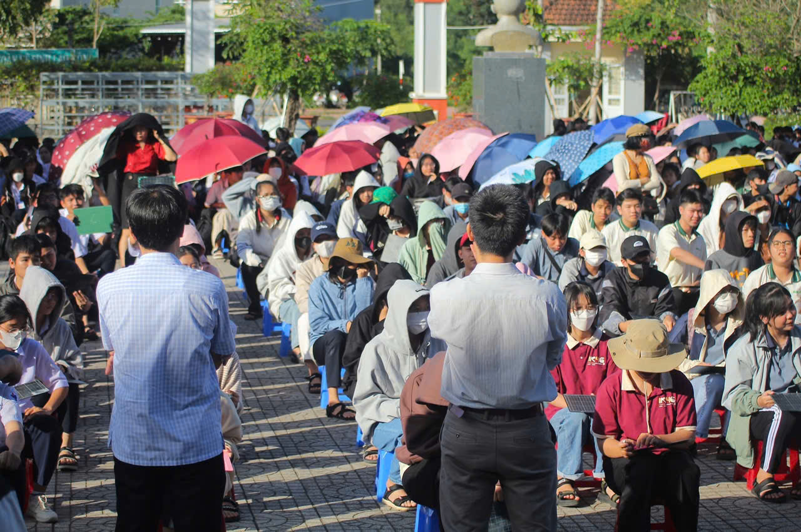
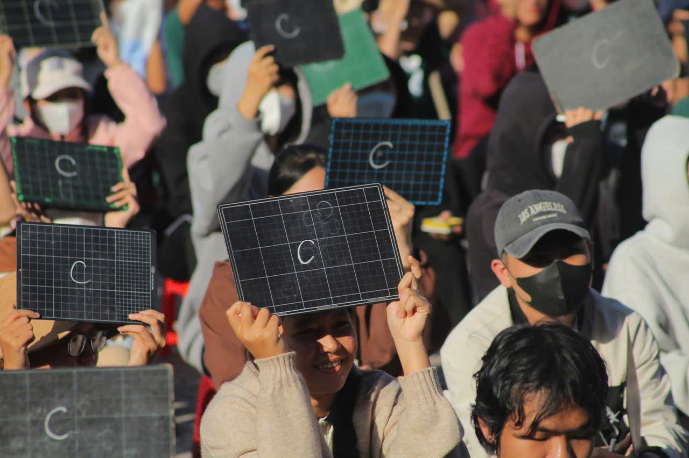
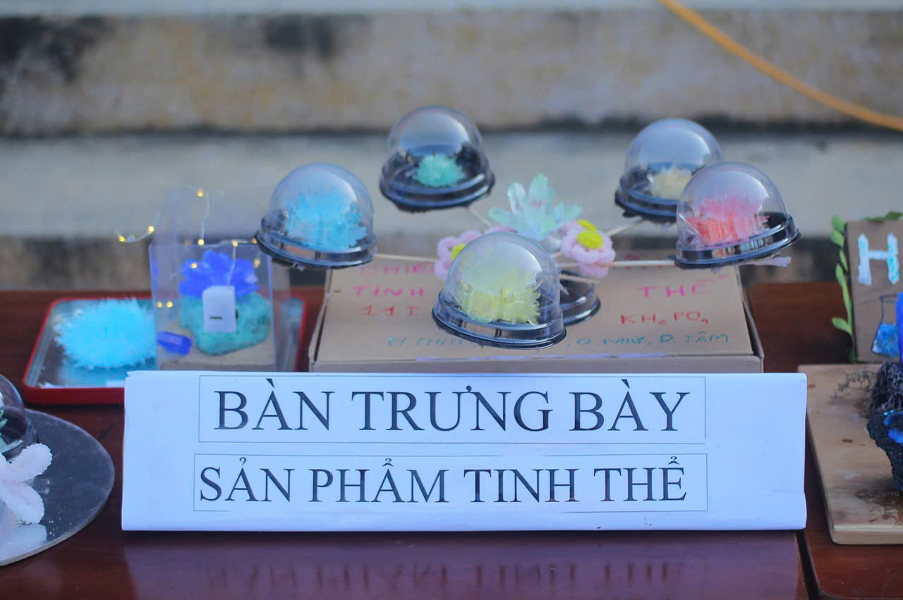
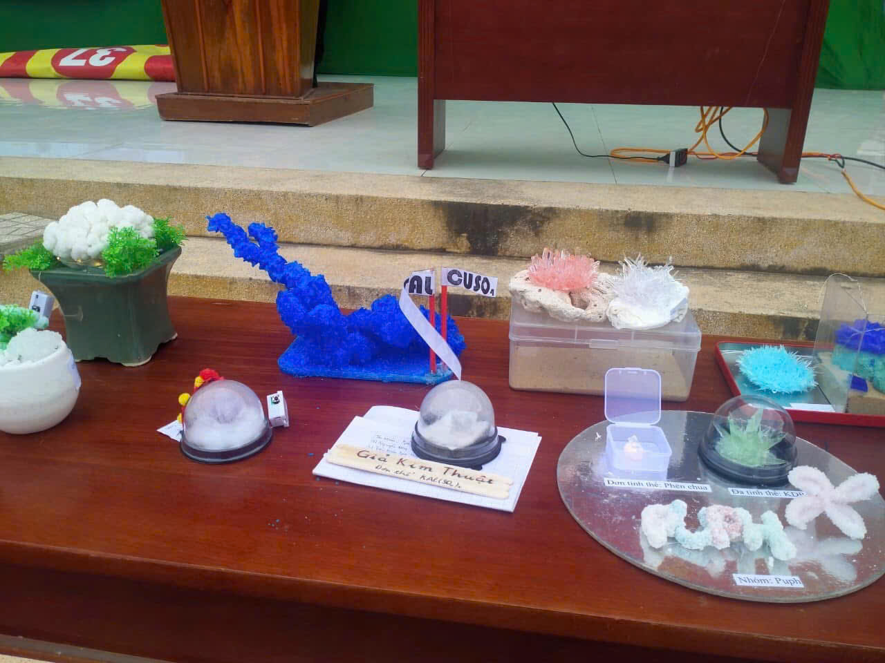

CHƯƠNG TRÌNH NGOẠI KHÓA RUNG CHUÔNG VÀNG VỚI CHỦ ĐỀ “HÓA HỌC VỚI CUỘC SỐNG”.
Chiều thứ tư, ngày 10/01/2024 Tổ Lý - Hóa trường THPT Trần Phú kết hợp Đoàn trường đã tổ chức buổi ngoại khóa Rung chuông vàng với chủ đề: “Hóa học với cuộc sống”.
Tham dự buổi ngoại khóa có đồng chí Nguyễn Tấn Lập - Huyện ủy viên, Bí thư đảng bộ, Hiệu trưởng nhà trường; đồng chí Phạm Thanh Bình - Phó bí thư đảng bộ, Phó hiệu trưởng; đồng chí Trần Doãn An - Phó hiệu trưởng; các thầy cô giáo trong hội đồng sư phạm nhà trường và toàn thể học sinh trường THPT Trần Phú năm học 2023 - 2024.
Mở đầu buổi sinh hoạt là các tiết mục văn nghệ, ảo thuật sôi động đến từ các em học sinh của trường. Các bạn khán giả cổ vũ chương trình cũng được tham gia trả lời nhiều câu hỏi thú vị và giành được nhiều phần quà xinh xắn.
|  |  |
Cuối buổi sinh hoạt là phần trao giải thưởng cuộc thi nuôi tinh thể với 58 đội thi, hơn 230 thí sinh. Ban tổ chức đã chọn được 2 giải nhất , 3 giải nhì 4 giải ba và 10 giải khuyến khích. Buổi ngoại khóa đã giúp học sinh tìm hiểu kiến thức thông qua các quá trình hóa học xảy ra trong đời sống hàng ngày, biết ứng dụng kiến thức môn Hóa học vào thực tế cuộc sống, góp phần nâng cao ý thức bảo vệ môi trường trong giai đoạn hiện nay. Tạo cho học sinh có cơ hội rèn luyện kĩ năng thực hành thí nghiệm, phát triển tính sáng tạo. Hoạt động trải nghiệm là tiền đề hướng nghiệp cho các em. Chương trình là sân chơi lành mạnh, kích thích tinh thần học tập của học sinh, đẩy mạnh việc dạy và học trong nhà trường.
|  |  |